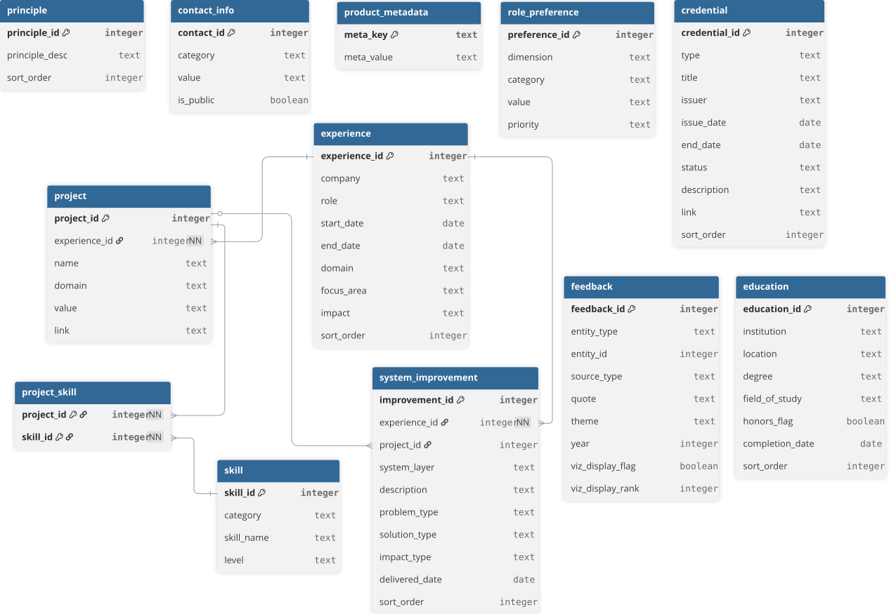

Entity design, relationships, and structural patterns that model professional experience as a consumable data product.
This schema models professional experience as a structured data product.
Key design principles:
Projects belong to an experience, and each project can reference multiple skills through the project_skill join table. System improvements belong to an experience and can optionally reference a parent project when the delivered change was part of a larger initiative.
The schema centers on professional experience as the primary domain entity. Projects and skills describe technical work, while feedback and preferences provide signals to the insight layer of the data product.
The diagram below provides a lightweight, embedded view of the core relationships in the schema for quick reference within the documentation.
%%{init: {'theme':'neutral'}}%%
erDiagram
EXPERIENCE ||--o{ PROJECT : contains
EXPERIENCE ||--o{ SYSTEM_IMPROVEMENT : contains
PROJECT ||--o{ SYSTEM_IMPROVEMENT : may_reference
PROJECT ||--o{ PROJECT_SKILL : maps
SKILL ||--o{ PROJECT_SKILL : maps
%% Polymorphic feedback (enforced by loader, not DB FK constraints)
EXPERIENCE ||--o{ FEEDBACK : references
EDUCATION ||--o{ FEEDBACK : references
PROJECT ||--o{ FEEDBACK : references
EXPERIENCE {
int experience_id PK
string company
string role
date start_date
date end_date
string domain
string focus_area
string impact
int sort_order
}
EDUCATION {
int education_id PK
string institution
string location
string degree
string field_of_study
string domain
boolean honors_flag
date completion_date
int sort_order
}
PROJECT {
int project_id PK
int experience_id FK
string name
string domain
string value
string link
}
SYSTEM_IMPROVEMENT {
int improvement_id PK
int experience_id FK
int project_id FK
string system_layer
string description
string problem_type
string solution_type
string impact_type
date delivered_date
int sort_order
}
SKILL {
int skill_id PK
string category
string skill_name
string level
}
CREDENTIAL {
int credential_id PK
string type
string title
string issuer
date issue_date
date end_date
string status
string description
string link
int sort_order
}
PROJECT_SKILL {
int project_id PK, FK
int skill_id PK, FK
}
FEEDBACK {
int feedback_id PK
string entity_type
int entity_id
string source_type
string quote
string theme
int year
boolean viz_display_flag
int viz_display_rank
}
ROLE_PREFERENCE {
int preference_id PK
string dimension
string category
string value
string priority
}
PRINCIPLE {
int principle_id PK
string principle_desc
int sort_order
}
CONTACT_INFO {
int contact_id PK
string category
string value
boolean is_public
}
PRODUCT_METADATA {
string meta_key PK
string meta_value
}The diagram below represents the full entity relationship model used during schema design. It includes layout optimizations and annotations not easily expressed in Mermaid. This diagram is the authoritative visual reference for the Human Data Product schema.

Full entity relationship diagram for the Human Data Product schema.
Primary domain entity representing roles over time.
| Column | Type | Key | Notes |
|---|---|---|---|
| experience_id | INTEGER | PK | Unique identifier for experience |
| company | TEXT | Company name | |
| role | TEXT | Role title | |
| start_date | DATE | Start date ISO YYYY-MM-DD format | |
| end_date | DATE | End date (NULL if current) ISO YYYY-MM-DD format | |
| domain | TEXT | Business or technology domain | |
| focus_area | TEXT | Primary focus area of the role | |
| impact | TEXT | Summary of impact or achievements | |
| sort_order | INTEGER | Controls display order |
Formal education history.
| Column | Type | Key | Notes |
|---|---|---|---|
| education_id | INTEGER | PK | Unique identifier |
| institution | TEXT | School / institution name | |
| location | TEXT | City, State (or Country) | |
| degree | TEXT | Degree earned (e.g., BS, BA, MS) | |
| field_of_study | TEXT | Major / concentration | |
| domain | TEXT | Optional thematic domain (e.g., Business, Analytics) | |
| honors_flag | BOOLEAN | TRUE if honors/distinction applies | |
| completion_date | DATE | Graduation / completion date (use NULL if in progress) ISO YYYY-MM-DD format | |
| sort_order | INTEGER | Controls display order |
Key initiatives or work performed during an experience.
| Column | Type | Key | Notes |
|---|---|---|---|
| project_id | INTEGER | PK | Unique identifier for project |
| experience_id | INTEGER | FK | References experience.experience_id |
| name | TEXT | Project name | |
| domain | TEXT | Domain or subject area | |
| value | TEXT | Description of value delivered | |
| link | TEXT | Optional external reference |
Delivered system-level changes performed within an experience, optionally linked to a larger project.
| Column | Type | Key | Notes |
|---|---|---|---|
| improvement_id | INTEGER | PK | Unique identifier for system improvement |
| experience_id | INTEGER | FK | References experience.experience_id |
| project_id | INTEGER | FK | Optional reference to project.project_id |
| system_layer | TEXT | Primary system layer affected (data, workflow, integration, UI, governance) | |
| description | TEXT | Normalized description of the delivered change | |
| problem_type | TEXT | Normalized problem category | |
| solution_type | TEXT | Normalized solution category | |
| impact_type | TEXT | Normalized impact category | |
| delivered_date | DATE | Delivery date in ISO YYYY-MM-DD format | |
| sort_order | INTEGER | Deterministic display / load order |
Preferences describing ideal future roles.
| Column | Type | Key | Notes |
|---|---|---|---|
| preference_id | INTEGER | PK | Unique identifier |
| dimension | TEXT | Categorical grouping axes | |
| category | TEXT | Preference category (location, work_mode, domain, etc.) | |
| value | TEXT | Preference value | |
| priority | TEXT | Importance level (high, medium, low) |
Normalized skill catalog.
| Column | Type | Key | Notes |
|---|---|---|---|
| skill_id | INTEGER | PK | Unique identifier |
| category | TEXT | Skill category (data, platform, architecture, etc.) | |
| skill_name | TEXT | Skill name | |
| level | TEXT | Proficiency level (beginner, intermediate, advanced, expert) |
Professional certifications, courses, or credentials.
| Column | Type | Key | Notes |
|---|---|---|---|
| credential_id | INTEGER | PK | Unique identifier |
| type | TEXT | Credential type (certification, course, badge, license) | |
| title | TEXT | Credential name/title | |
| issuer | TEXT | Issuing organization (SAP, Microsoft, etc.) | |
| issue_date | DATE | Date issued (NULL if in progress) ISO YYYY-MM-DD format | |
| end_date | DATE | Expiration/end date (NULL if none) ISO YYYY-MM-DD format | |
| status | TEXT | Status (active, in_progress, expired) | |
| description | TEXT | Optional short description of relevance | |
| link | TEXT | Optional URL (credential verification, course page, etc.) | |
| sort_order | INTEGER | Controls display order |
Join table mapping projects to skills.
| Column | Type | Key | Notes |
|---|---|---|---|
| project_id | INTEGER | PK / FK | References project.project_id |
| skill_id | INTEGER | PK / FK | References skill.skill_id |
Composite Primary Key: (project_id, skill_id)
This table represents a many-to-many relationship between projects and skills.
Architecture or professional principles.
| Column | Type | Key | Notes |
|---|---|---|---|
| principle_id | INTEGER | PK | Unique identifier |
| principle_desc | TEXT | Architecture or philosophy principle | |
| sort_order | INTEGER | Controls display order |
Contact information exposed through API.
| Column | Type | Key | Notes |
|---|---|---|---|
| contact_id | INTEGER | PK | Unique identifier |
| category | TEXT | Contact type (email, linkedin, website) | |
| value | TEXT | Contact value | |
| is_public | BOOLEAN | Determines whether field is exposed in API |
Peer or leadership feedback tied to a specific experience.
| Column | Type | Key | Notes |
|---|---|---|---|
| feedback_id | INTEGER | PK | Unique identifier |
| entity_type | TEXT | Target entity type (experience, education, project, credential) | |
| entity_id | INTEGER | Target entity id (validated by loader; not a DB-enforced FK) | |
| source_type | TEXT | Source of feedback (manager, peer, stakeholder, linkedin) | |
| quote | TEXT | Feedback quote (consider trimming names/private details) | |
| theme | TEXT | Theme (architecture, execution, leadership, collaboration, growth, strategy) | |
| year | INTEGER | Year feedback was given | |
| viz_display_flag | INTEGER / BOOLEAN | Indicates whether the record is included in the curated default drilldown view | |
| viz_display_rank | INTEGER | Rank order within the curated subset; null for non-curated records |
Entity validation note
entity_type should be one of: experience, education, project, credential.
entity_id must exist in the corresponding table. This is enforced in the load_data.py validation step rather than through DB-level foreign key constraints.
The feedback entity includes optional presentation metadata used by the frontend drilldown experience.
viz_display_flag = 1 identifies records shown by default in theme drilldownsviz_display_rank controls the order of curated recordsMetadata describing the Human Data Product.
| Column | Type | Key | Notes |
|---|---|---|---|
| meta_key | TEXT | PK | Metadata key (version, product status, last refresh timestamp) |
| meta_value | TEXT | Metadata value |